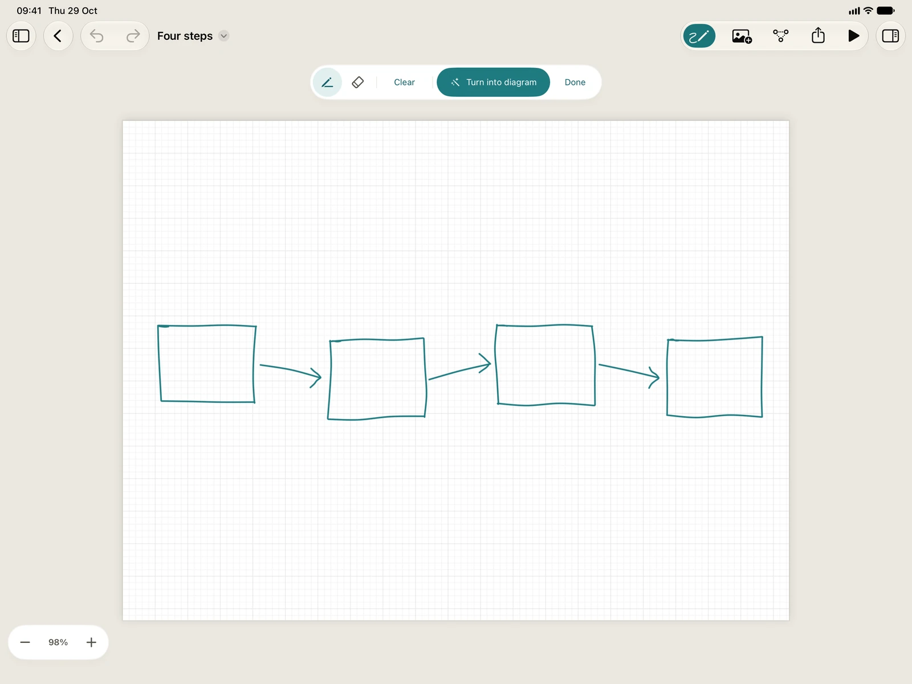

Diagrove on iPad
Diagrove on iPad is the same app as on the Mac, on the same engine: the same documents, canvas, inspector, stencils, prompt bar and Play mode. What changes is how you work with it. This page covers touch, Apple Pencil, a trackpad and a keyboard, Sketch mode, where your documents live, and what stays on the Mac in Diagrove 1.0.
Starting and the window
The start screen offers New diagram and Choose a template above the Files browser, with your recent documents. See Getting started.
In a document, the toolbar has Undo and Redo, Sketch, Insert picture, Arrange, Export (with Send to Dayfolio and Preview as embed in its menu), Play and the inspector. Where the sidebar and the inspector can’t both sit beside the canvas, in portrait or a half-screen Split View, opening one puts the other away, so the canvas keeps its room. The inspector is a column on a wide window and a sheet on a narrow one. Diagrove works in every orientation, in Split View, Slide Over and Stage Manager, and in more than one window at a time.
Touch
- Tap selects a graphic, or places one with a drawing tool.
- Double tap edits a shape’s text, or enters a group.
- Drag moves, resizes, rotates or draws. From an empty spot, a drag selects what it surrounds.
- Two fingers pan and pinch to zoom.
- Long press opens the context menu, the same one a right-click opens on the Mac: Cut, Copy, Copy as Diagrove text, Paste and Duplicate, then Group or Ungroup, Lock, Bring to front and Send to back, Flip, Align for two or more, Save as stencil… and Delete, with a table cell’s row and column commands first.
- Drag and drop brings in stencils from the sidebar and pictures or SVG drawings from other apps, where you drop them.
Fingers get generous targets: a handle or a thin line can be grabbed a little outside it, so small shapes stay easy to move.
Apple Pencil
Outside Sketch mode, Apple Pencil works as a precise finger, and it presses at once. With the Line tool chosen, hovering the Pencil over the canvas shows the magnets a line would attach to. Fingers resting on the screen while you draw are ignored.
Double tap or squeeze switches between the last drawing tool and Select, unless you turn the gesture off in Settings or set it to run a shortcut.
Trackpad and keyboard
With a trackpad or mouse, a click works as it does on the Mac, scrolling pans, a pinch zooms and a secondary click opens the context menu. The pointer is a crosshair for drawing tools.
A hardware keyboard follows the Mac’s rules: Delete removes the selection, the arrow keys nudge it (with Shift, by 10 points), Return edits text, Esc steps back out of what you’re doing (Play mode, a tool, a group, the selection), single keys choose tools, and Tab moves between a table’s cells.
The menu bar
Diagrove’s commands are in the iPadOS menu bar, as on the Mac: Export, Send to Dayfolio, Insert, Arrange, zoom, View › Play (Option-Command-P), View › Preview as embed and the Canvas menu. Hold Command on a hardware keyboard to see the shortcuts.
The Insert menu has Picture from Photos… (Shift-Command-I), Picture from Files… and Drawing from Files… (Option-Shift-Command-I) for SVG drawings. See Import and export.
Sketch mode
Sketch mode turns a rough drawing into a clean diagram, where you drew it. It’s on iPad only.
- Tap Sketch in the toolbar. A sketch bar takes the tool palette’s place.
- Draw boxes, circles and arrows over the canvas with Apple Pencil or a finger. Write words inside shapes and beside arrows if you like.
- Use Eraser to rub out whole strokes, or Clear to start again. Undo and Redo act on your ink while you sketch.
- Tap Turn into diagram. Diagrove reads your ink on the iPad and puts shapes and connected lines where you drew them, with handwriting it can read as their words.
The result is one undo step, and a notice says what came in, with Tidy to arrange it for you. Done or Esc leaves Sketch mode without turning anything into a diagram. Your ink waits on its canvas until you close the window, and it’s never saved in the document.
Once you’ve used Apple Pencil, only the Pencil draws in Sketch mode and one finger scrolls, as in Notes.

Files and iCloud Drive
Diagrove documents are files in the Files app, on your iPad or in iCloud Drive. A document you keep in iCloud Drive opens on your Mac too, and a document from the Mac opens on iPad.
A new document from a template is made beside the last document you opened. If there isn’t one, it goes in Diagrove’s folder in iCloud Drive, or in On My iPad › Diagrove without iCloud Drive.
To export, choose Export… from the toolbar’s Export menu, then Save to Files… or Share.
What is Mac only in 1.0
These are on the Mac only in Diagrove 1.0:
- Exporting a Web player. The iPad exports PNG, PDF and SVG.
- The sheet that turns a photo or picture into a diagram, with Continuity Camera. On iPad, use Sketch mode.
- Opening OmniGraffle documents. OmniGraffle stencils (
.gstencil) import on iPad too, from Your libraries. - The command-line tool.
Sketch mode is the other way round: it’s on iPad only.
Text size
On iPad, Diagrove’s own text follows the text size you choose in Settings › Display & Brightness › Text Size, and in Accessibility for the larger sizes. At the largest sizes, inspector labels move above their controls so nothing is cut off. The words in your diagrams stay the size you drew them. On the Mac, Diagrove keeps its own sizes.
VoiceOver reads the canvas graphic by graphic, and in Play mode a graphic with an action is a button that a double tap runs.